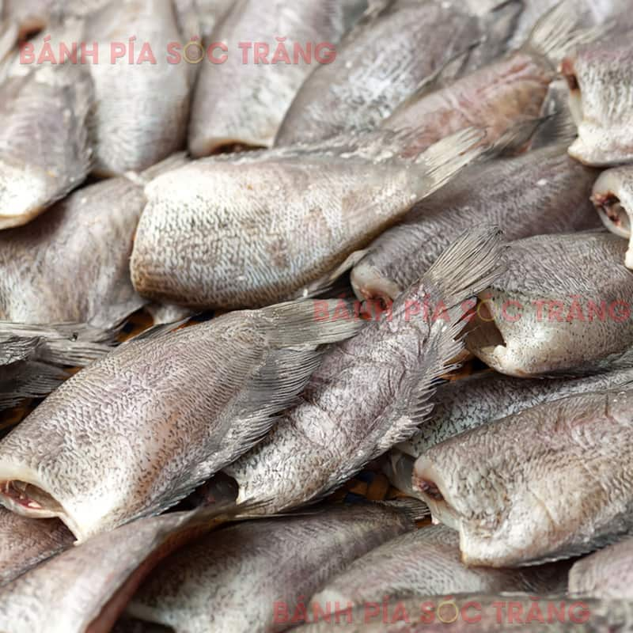

200.000 VNĐ / 500g
Khô Cá Sặc là một trong những đặc sản dân dã nổi tiếng của Sóc Trăng. Cá sặc tươi được làm sạch, tẩm ướp gia vị vừa ăn rồi phơi nắng tự nhiên, tạo nên hương vị thơm ngon, thịt cá dai ngọt và đậm đà. Sản phẩm thích hợp dùng trong bữa cơm gia đình hoặc làm quà biếu.
Xuất xứ: Sóc Trăng
Khối lượng: 500g
Thành phần: Cá sặc, muối, đường, tiêu
Hạn sử dụng: 06 tháng
Bảo quản: Ngăn mát hoặc ngăn đông tủ lạnh
Giao hàng: Toàn quốc.